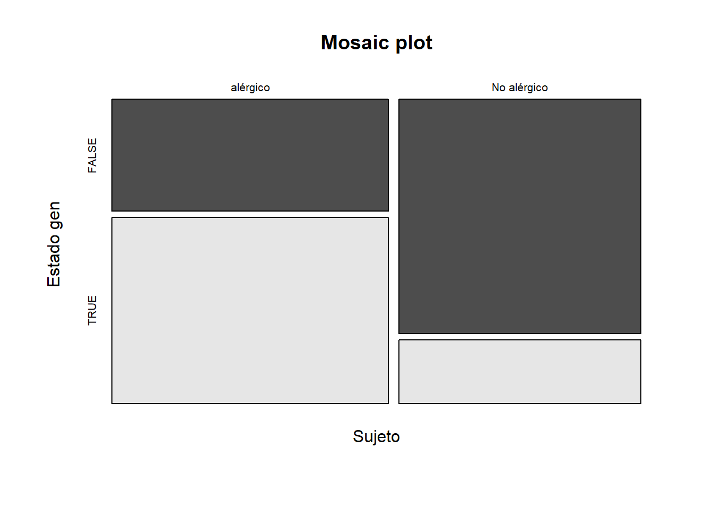
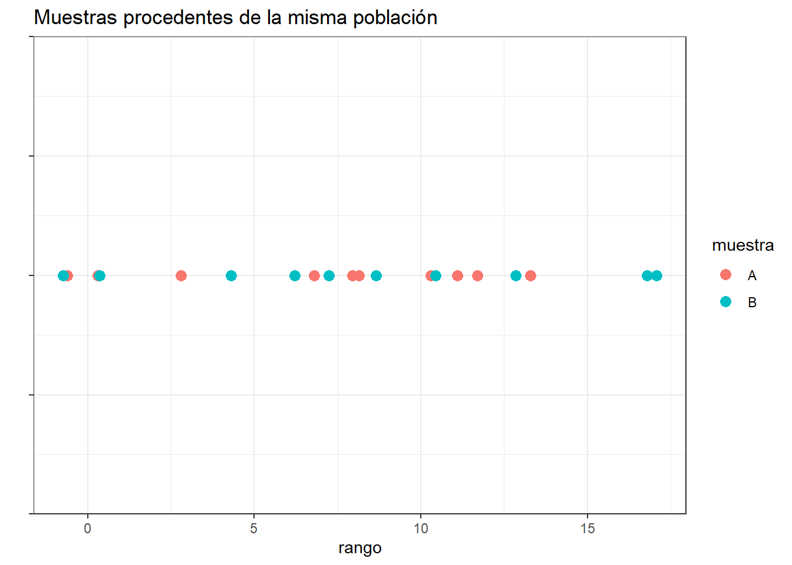
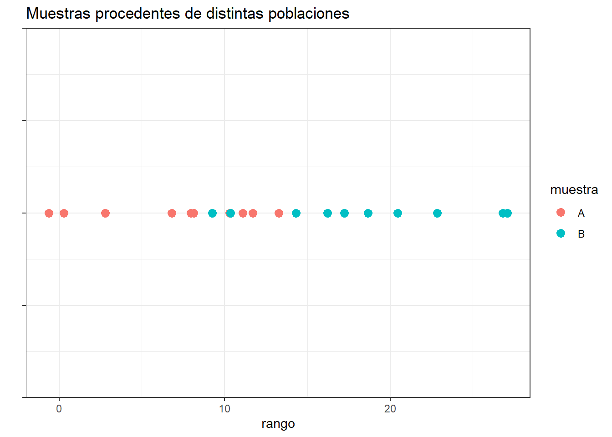

Pruebas no paramétricas
Graficos para analizar la distribución de los datos
Gran parte de los modelos estadísticos consideran que las observaciones provienen de poblaciones normales. En muchas situaciones este supuesto no se cumple. A continuación se mencionan algunos gráficos utilizados para analizar la distribución de los datos, además de la detección de puntos atípicos.
En metrología los datos atípicos son llamados valores aberrantes, conocidos como las observaciones que se desvían significativamente de la tendencia general de los datos o que están considerablemente alejados de otros valores de la muestra. La detección y gestión de valores aberrantes es importante en metrología para garantizar la precisión y fiabilidad de las mediciones. Los valores aberrantes pueden sesgar los resultados del análisis y afectar la toma de decisiones basada en los datos.
Gráfico de densidad
Visualiza la distribución de datos en un intervalo continuo. Este gráfico es una variación de un histograma, donde el concepto de frecuencia relativa se cambia por el de probabilidad, la suma de todas la superficie será 1.
Los picos ayudan a mostrar dónde los valores se concentran en el intervalo, a su vez permite comparar la densidad de una variable continua en relación a los niveles de factor de una variable cualitativa.
Ejemplo
El acceso al agua potable es esencial para la salud, un derecho humano básico y un componente de una política eficaz de protección de la salud. Esto es importante como cuestión de salud y desarrollo a nivel nacional, regional y local. En algunas regiones, se ha demostrado que las inversiones en abastecimiento de agua y saneamiento pueden generar un beneficio económico neto, ya que las reducciones de los efectos adversos para la salud y los costos de atención médica superan los costos de llevar a cabo las intervenciones.
El PH es un parámetro importante para evaluar el equilibrio ácido-base del agua. La OMS ha recomendado un límite máximo permitido de pH de 6,5 a 8,5.
Se tienen los datos del ph del agua dependiendo de si el agua es potable o no, 632 datos de agua potable y 632 de agua no potable, se desea comparar su distribución.
library(ggplot2)
head(no)## [1] 3.7 8.1 8.3 9.1 5.6 10.2head(si)## [1] 9.4 9.0 6.8 7.2 7.7 8.3# datos
par(mfrow=c(1,2))
tmp <- rbind(data.frame(origen = "no", dato = no),
data.frame(origen = "si", dato = si))
ggplot(tmp, aes(x =dato, fill = origen)) +
geom_density(alpha = 0.3)
hist(no, xlab = "PH agua no potable", ylab = "Frecuencia", las=1, main = "", col = "gray")
hist(si, xlab = "PH agua potable", ylab = "Frecuencia", las=1, main = "", col = "gray")
Grafico cuantil cuantil
Los gráficos cuantil cuantil son una ayuda para explorar si un conjunto de datos proviene de una población con cierta distribución.
La función qqnorm sirve para explorar la normalidad de una muestra, generalmente va acompañada de una linea recta de referencia, que se estima con la función qqline.
La función qqplot sirve para crear el gráfico cuantil cuantil para cualquier distribución, requiere los cuantiles de la distribución candidata.
Ejemplo de los datos de agua potable
par(mfrow=c(1, 2))
qqnorm(y=si, main='PH agua potable', ylab='Cuantiles muestrales',
xlab='Cuantiles teóricos', las=1)
qqline(y=si, col='blue', lwd=2, lty=2)
qqnorm(y=no, main='PH agua no potable', ylab='Cuantiles muestrales',
xlab='Cuantiles teóricos', las=1)
qqline(y=no, col='blue', lwd=2, lty=2)
Boxplot
El boxplot es una herramienta de análisis que resalta las principales características de un conjunto de datos, los números usados para construirlo son:
- Valor mínimo
- Los cuartiles \(Q_1,Q_2,Q_3\)
- Valor máximo

Cada sección contiene el 25% de los datos. La caja muestra la mitad de los datos, es decir el 50% de ellos, contiene la información entre el 3 cuartil y el primer cuartil.
Sirve para realizar comparaciones de una variable cuantitativa, en relación a los niveles de una variable cualitativa.
Es posible observar la dispersión de cada caja, mientras mas larga, más dispersión.
Permite observar puntos atípicos,los cuales no están contenidos dentro de la caja, ni en sus bigotes.
Ejemplo
construir un boxplot con los datos del ph del agua según su potabilidad, Qué infiere?
boxplot(no,si)
abline(h=6.5,col=2)
abline(h=8.5,col=2)
Pruebas de bondad de ajuste para distribuciones de probabilidad
Pruebas de normalidad
La hipotesis nula y alternativa de normalidad son las siguientes:
\[H_0: \quad Los\quad datos\quad se\quad distribuyen \quad normal\]
\[H_1: \quad Los\quad datos\quad no \quad se\quad distribuyen \quad normal\] Existen diferentes pruebas para evaluar la normalidad, todas son de fácil implementación en R.
- Prueba Shapiro-Wilk
En R se usa la función shapiro.test, se usa cuando la muestra es como máximo de tamaño 50. Es más potente que la prueba de K-S.
Prueba Anderson-Darling con la función ad.test del paquete nortest.
Prueba Cramer-von Mises con la función cvm.test del paquete nortest.
Prueba Lilliefors (Kolmogorov-Smirnov) con la función lillie.test del paquete nortest.
Prueba Pearson chi-square con la función pearson.test del paquete nortest.
Prueba Shapiro-Francia con la función sf.test del paquete nortest.
Ejemplo en R probando normalidad en los datos de potabilidad del agua
Para los datos del ph del agua, se desea probar mediante una prueba estadística si los datos se distribuyen de forma normal
shapiro.test(no)##
## Shapiro-Wilk normality test
##
## data: no
## W = 0.99749, p-value = 0.4571shapiro.test(si)##
## Shapiro-Wilk normality test
##
## data: si
## W = 0.9852, p-value = 5.12e-06Otro Ejemplo en R
Se necesita verificar si es correcto suponer que el volumen de llenado (en onzas) de una máquina dispensadora de jugos sigue una distribución normal, por lo que se toman 25 botellas de forma aleatoria. Los datos del volumen de llenado obtenidos de la muestra se encuentran almacenados en el vector volumen.
Hipótesis
\(H_0:\) el volumen de llenado (en onzas) sigue una distribución normal.
\(H_1:\) el volumen de llenado (en onzas) no sigue una distribución normal.
Nivel de significancia: 0.05 (Hipotético).
Analisis descriptivo
library(nortest)
volumen <-c(8.39,12.14,11.80,12.04,7.34,12.62,11.51,12.47,11.08,14.32,11.33,11.56, 12.79,11.72,12.84,11.73,12.1,11.88,11.95,10.84,11.79,13.21,12.56,12.55,12.80)
mean(volumen)## [1] 11.8144sd(volumen)## [1] 1.4036require(car)## Loading required package: car## Loading required package: carDatalibrary(MASS)
par(mfrow=c(1,4))
hist(volumen, xlab = "Volumen de llenado", ylab = "Frecuencia", las=1, main = "", col = "gray")
plot(density(volumen), xlab = "Volumen de llenado", ylab = "Densidad", las=1, main = "")
qqPlot(volumen, xlab="Cuantiles teóricos", ylab="Cuantiles muestrales", las=1,main="")## [1] 5 1boxplot(volumen)
ks.test(volumen, "pnorm", mean =11.81, sd=1.4)##
## One-sample Kolmogorov-Smirnov test
##
## data: volumen
## D = 0.21516, p-value = 0.1703
## alternative hypothesis: two-sidedshapiro.test(volumen)##
## Shapiro-Wilk normality test
##
## data: volumen
## W = 0.8161, p-value = 0.0004272ad.test(volumen)##
## Anderson-Darling normality test
##
## data: volumen
## A = 1.6505, p-value = 0.0002268cvm.test(volumen)##
## Cramer-von Mises normality test
##
## data: volumen
## W = 0.27431, p-value = 0.0005727sf.test(volumen)##
## Shapiro-Francia normality test
##
## data: volumen
## W = 0.79487, p-value = 0.0004128Pruebas para otras distribuciones
Una alternativa a la no normalidad de los datos, es proceder a implementar pruebas no paramétricas, para evaluar si los datos se ajustan a una distribución hipotética.
Pruebas de hipótesis
\(H_0:\) Los datos analizados siguen una distribución M.
\(H_1:\) Los datos analizados no siguen una distribución M
Test de Kolmogorov-Smirnov K-S
Se emplea para saber si una distribución de probabilidad acumulada difiere de una distribución hipotética, por lo general la distribución normal, la uniforme, la de Poisson o la exponencial. Es decir permite contrastar si un conjunto de datos muestrales proviene de un tipo de distribución.
Estadístico
Cuando K-S se aplica para contrastar la hipótesis de normalidad de la población, el estadístico de prueba es la máxima diferencia entre las funciones de distribución de probabilidad muestral y la teórica:
\[D=max|F_n-F_0(x)|\]
Siendo \(F_n(x)\) la función de distribución muestral y \(F_0(x)\) es la función teórica (normal) especificada en la hipotesis nula \(H_0\)
Ejemplo probando la distribución exponencial
Celia quiere medir el tiempo de atención a los usuarios. Se seleccionaron 20 personas y los tiempos de atención en minutos.
require(car)
tiempo<-c(3.69, 39.50, 4.43, 2.70, 9.11, 10.21, 10.44, 2.57, 5.68, 0.80,12.63, 2.35, 25.47, 8.07, 0.96, 0.21, 12.06, 10.79, 6.58, 13.06)
par(mfrow=c(1,4))
hist(tiempo, xlab = "Tiempo", ylab = "Frecuencia", las=1, main = "", col = "gray")
qqPlot(tiempo, col = "gray", ylab="Tiempo")## [1] 2 13plot(density(tiempo), xlab = "Tiempo", ylab = "Densidad", las=1, main = "")
boxplot(tiempo, xlab = "Tiempo", ylab = "Densidad", las=1, main = "")
Se procede a revisar el ajuste con respecto a una distribución exponencial con un α=0.05
Sea X el tiempo entre llegadas a Celia Express.
\[H_0:X∼exp\]
\[H_1:X≁exp\]
La siguiente función ayuda a estimar los parámetros del modelo
library(MASS)
Ajustex <- fitdistr(tiempo,"exponential")
Ajustex## rate
## 0.11030831
## (0.02466569)Ks<- ks.test(tiempo, "pexp", rate=Ajustex$estimate[1])
Ks##
## One-sample Kolmogorov-Smirnov test
##
## data: tiempo
## D = 0.13678, p-value = 0.8006
## alternative hypothesis: two-sidedSegún las pruebas realizadas, no se rechaza la hipótesis nula y por tanto, se asume la distribución exponencial.
Ejemplo comparando dos distribuciones
Se desea saber si los datos de potabilidad de agua (potable y no potable) siguen la misma distribución de probabilidad.
\[H_0:X_{si}∼X_{no}\]
\[H_1:X_{si}≁X_{no}\]
par(mfrow=c(1,2))
hist(si)
hist(no)
ks.test(si, no)## Warning in ks.test(si, no): p-value will be approximate in the presence of ties##
## Two-sample Kolmogorov-Smirnov test
##
## data: si and no
## D = 0.058544, p-value = 0.2289
## alternative hypothesis: two-sidedPrueba Chi cuadrado
Tiene diferentes usos entre los que se encuentran
- Determinar si una variable categórica sigue o no, una distribución hipotética, como la binomial o la poisson.
El juego de hipótesis es:
\(H_0:\) Los datos analizados siguen una distribución M.
\(H_1:\) Los datos analizados no siguen una distribución M
Grados de libertad
\[gl=\quad k \quad observaciones-\quad t\quad parametros \quad estimados\quad -1\]
- Evaluar si una variable es independiente de la otra: Dos variables aleatorias X e Y son llamadas independientes, si la distribución de probabilidad de una de las variables no es afectada por la presencia de la otra.
El juego de hipótesis es:
\(H_o:\) Las variables son independientes, una variable no varía entre los distintos niveles de la otra variable. \(H_a:\) Las variables son dependientes, una variable varía entre los distintos niveles de la otra variable.
Grados de libertad
\[df=(columnas−1)*(filas−1)\]
- Comparar si dos distribuciones de probabilidad se desempeñan de las misma manera
El juego de hipótesis es:
\(H_o:\) la distribución de probabilidad de x es similar a y.
\(H_a:\) la distribución de probabilidad de x no es similar a y.
En todos los casos el estadístico corresponde a:
\[ \large \chi^2=\sum_{i,j}^n \frac {(o_{ij}-e_{ij})^2}{e_{ij}}\]
Asuma que \(Oij\) es la frecuencia observada de eventos que pertenecen a ambos, la i−ésima categoría de X y la j−ésima categoría de Y. Además, suponga que \(e_{ij}\) son las correspondientes frecuencias esperadas si X e Y son independientes.
Videos ejemplo
Prueba chi cuadrado para la independencia de dos distribuciones
Prueba de bondad de ajuste para la distribución de probabilidad binomial
Prueba de bondad de ajuste para la distribución de probabilidad poisson
Ejemplo En un supermercado se está estudiando el comportamiento del número de personas que llegan cada hora. Se analizaron 20 horas, cuyos datos se consignan a continuación:
Análisis exploratorio Se analiza los gráficos para determinar una distribución hipotética.
personas<-c(13, 14, 14, 19, 17, 14, 13, 9, 16, 16,13, 13, 15, 13, 7, 14, 14, 13, 20, 15)
mean(personas)## [1] 14.1par(mfrow=c(1,2))
hist(personas, xlab = "personas", ylab = "Frecuencia", las=1, main = "", col = "gray")
plot(density(personas), xlab = "personas", ylab = "Densidad", las=1, main = "")
En este caso, la variable de interés registra un número de eventos por unidad de tiempo, por lo que se sugiere analizar el ajuste a una distribución poisson. Se muestra la respectiva prueba de hipótesis. Sea X el número de clientes que visitan Celia Express.
\(H_0:X_i∼Poisson\)
\(H_1:X_i≁Poisson\)
Manualmente
Los valores se agrupan en una tabla de frecuencias
| Clientes/hora | Frec obs | prob | frec esp | (obs-esp)^2/esp |
|---|---|---|---|---|
| 9 | 2 | 0.048 | 0.96 | 1.1 |
| 13 | 6 | 0.106 | 2.12 | 7.1 |
| 14 | 5 | 0.105 | 2.12 | 3.9 |
| 15 | 2 | 0.098 | 1.97 | 0 |
| 16 | 2 | 0.085 | 1.72 | 0 |
| 17 | 3 | 0.07 | 1.41 | 1.8 |
| total | 20 | 13.9 |
el valor del promedio \(\lambda\) se estima asi: \[\lambda=\frac{(9*2)+(13*6)+(14*5)+(15*2)+(16*2)+(17*3)}{20}=13.95\]
A partir de este valor se estima la probabilidad de cada uno de ellos según la distribución de probabilidad poisson
\[p(x=9)=\frac{e^{-\lambda}\lambda^x}{x!}=\frac{e^{-13.95}13.95^9}{9!}=0.048\]
La frecuencia esperada se obtiene de multiplicar cada valor de probabilidad por 20.
El valor del estadístico es 13.9 los grados de libertad de la distribución está dado por: gl=observaciones- k (parámetros estimados)-1
\[P(\chi^2_4>13.9)=0.0075 \] rechaza la hipotesis nula y se concluye que los datos no se distribuye poisson
En Rstudio
Para estimar los parámetros de una distribución de probabilidad discreta (poisson y binomial), se requiere la función goodfit del paquete vcd. Esta función también realiza la prueba de bondad de ajuste y sus argumentos son: variable de interés, tipo de distribución y método. Se usará el test de Chi-cuadradado a través del argumento “MinChisq”
require(vcd)## Loading required package: vcd## Loading required package: gridgf<-goodfit(personas, type = "poisson", method = "MinChisq")
gf$par## $lambda
## [1] 13.60833summary(gf)## Warning in summary.goodfit(gf): Chi-squared approximation may be incorrect##
## Goodness-of-fit test for poisson distribution
##
## X^2 df P(> X^2)
## Pearson 19.30042 19 0.4377217chisq.test(personas)##
## Chi-squared test for given probabilities
##
## data: personas
## X-squared = 11.333, df = 19, p-value = 0.9121Ejemplo Comparación de distribuciones
Retomando el ejemplo de el ph de agua potable y no potable
\(H_0:X_{si}∼y_{no}\)
\(H_1:X_{si}≁y_{no}\)
chisq.test(no,si)## Warning in chisq.test(no, si): Chi-squared approximation may be incorrect##
## Pearson's Chi-squared test
##
## data: no and si
## X-squared = 6298.3, df = 6318, p-value = 0.5672Ejemplo en R:
Se usan los datos de la base survey de la librería MASS de R, que corresponden a 237 observaciones provenientes de una encuesta a estudiantes de estadística de una Universidad en Australia.
- Valide la hipótesis de si el hábito de fumar es independiente del nivel de ejercicios de los estudiantes usando un nivel de significancia del 0.05.
El juego de hipotesis es:
\(H_o:\) El hábito de fumar es independiente de hacer ejercicio
\(H_a:\) El hábito de fumar es dependiente de hacer ejercicio
## Para inst lar librerías use
# install.packages("MASS")
## Para llamar la librería
library(MASS)
library(DT)
## se usan las variables
## FUMA (Smoke) con los niveles: Heavy, Regul, Occas y Never
## EJERCICIO (Exer) con los niveles: Freq, Some, y None
##se tabulan
tbl=table(survey$Smoke,survey$Exer)
tbl##
## Freq None Some
## Heavy 7 1 3
## Never 87 18 84
## Occas 12 3 4
## Regul 9 1 7chisq.test(tbl)## Warning in chisq.test(tbl): Chi-squared approximation may be incorrect##
## Pearson's Chi-squared test
##
## data: tbl
## X-squared = 5.4885, df = 6, p-value = 0.4828#Note que aparece un mensaje de alerta. Esto es debido a que en algunas celdas las
#frecuencias son muy pequeñas. Podemos solucionar esto agrupando algunas columnas.
ctbl = cbind(tbl[,"Freq"], tbl[,"None"] + tbl[,"Some"])
ctbl## [,1] [,2]
## Heavy 7 4
## Never 87 102
## Occas 12 7
## Regul 9 8chisq.test(ctbl)##
## Pearson's Chi-squared test
##
## data: ctbl
## X-squared = 3.2328, df = 3, p-value = 0.3571mosaicplot(ctbl,
main = "Mosaic plot",
color = TRUE
)
fuerza de asociación
library(vcd)
assocstats(x = tbl)## X^2 df P(> X^2)
## Likelihood Ratio 5.8015 6 0.44579
## Pearson 5.4885 6 0.48284
##
## Phi-Coefficient : NA
## Contingency Coeff.: 0.151
## Cramer's V : 0.108Pruebas de independencia de las distribuciones
Se utilizan cuando se quiere estudiar si existe asociación entre dos variables cualitativas, es decir, si las proporciones de una variable son diferentes dependiendo del valor que adquiera la otra variable.
Existen dos tipos de pruebas de independencia, la prueba chi cuadrado y la prueba exacta de fisher. La prueba de Chi-cuadrado se utiliza cuando la muestra es suficientemente grande. La prueba exacta de Fisher se utiliza cuando la muestra es pequeña.
La prueba de Chi-cuadrado no es adecuada cuando los valores esperados en una de las celdas de la tabla de contingencia son menores a 5; en este caso, se prefiere la prueba exacta de Fisher (McCrum-Gardner, 2008; Bower, 2003).
El juego de hipótesis es:
\(H_o:\) Las variables son independientes, una variable no varía entre los distintos niveles de la otra variable.
\(H_a:\) Las variables son dependientes, una variable varía entre los distintos niveles de la otra variable.
Fuerza de asociación entre variables cualitativas (tamaño del efecto)
Dado que las pruebas contrastan si las variables están relacionadas, al tamaño del efecto se le conoce como fuerza de asociación. Existen múltiples medidas de asociación, entre las que destacan phi o Cramer’s V. Los límites empleados para su clasificación son:
Test exacto de fisher
Se aplica para comparar dos variables categóricas con dos niveles cada una (tabla 2x2), está diseñado para situaciones en las que las frecuencias marginales de filas y columnas (los totales de cada fila y columna) son fijas, se conocen de antemano. Esta condición es relevante en los experimentos biológicos ya que no es común poder cumplirla. Si esta condición no se satisface el test de Fisher deja de ser exacto, por lo general pasando a ser más conservativo.
Ejemplo de experimentos con y sin frecuencias marginales fijas:
Frecuencias marginales fijas:
Supóngase que se quiere saber si la preferencia que tienen dos especies de pájaros (estorninos y gorriones) para refugiarse en casetas artificiales es diferente dependiendo del material de fabricación (madera o metal). Para ellos se disponen en una pajarera 5 casetas de metal y 5 de madera y se sueltan en el interior de la jaula 4 gorriones y 6 estorninos. En este experimento se sabe que las frecuencias marginales van a ser 5, 5, 4, 6 lo que no se sabe es como se van a distribuir las observaciones dentro de la tabla.
| Pájaro | Metal | Madera | total |
|---|---|---|---|
| Gorrión | ? | ? | 4 |
| Estornino | ? | ? | 6 |
| Total | 5 | 5 | 10 |
Frecuencias marginales no fijas:
Supóngase que se quiere determinar si un fármaco acelera la cicatrización. Para ello se selecciona a 50 pacientes que se reparten aleatoriamente en dos grupos iguales (tratamiento y placebo), tras una semana de tratamiento se determina si la cicatrización ha finalizado (si / no). En este caso las frecuencias marginales de los tratamientos son fijas, 25 para cada grupo, sin embargo no se sabe cuántos en cada grupo van a haber cicatrizado o no, por lo que las frecuencias marginales del resultado de cicatrización no son fijas.
| Tratamiento | cicatrizado | No cicatrizado | total |
|---|---|---|---|
| placebo | ? | ? | 25 |
| Tratamiento | ? | ? | 25 |
| Total | ? | ? | 50 |
Condiciones del test
Independencia,las observaciones de la muestra deben ser independientes unas de otras.
Muestreo aleatorio.
Tamaño de la muestra < 10% población.
Cada observación contribuye únicamente a uno de los niveles.
Las frecuencias marginales de columnas y filas tienen que ser fijas. Si esta condición no se cumple, el test de Fisher deja de ser exacto.
Cálculo del p-value
El test exacto de Fisher se basa en la distribución hipergeométrica, que permite calcular la probabilidad exacta de obtener una determinada distribución de eventos dentro de una tabla. Supóngase la siguiente tabla de contingencia:
| Niveles | Nivel A1 | Nivel A2 | total |
|---|---|---|---|
| Nivel B1 | a | b | a+b |
| Nivel B2 | c | d | c+d |
| Total | a+c | b+d | n |
n=a+b+c+d
\[p= \frac{{a+b\choose a}\,{c+d\choose c}}{{n\choose a+c}}= \frac{(a+b)!(c+d)!(a+c)!(b+d)!}{a!b!c!d!n!}\] El test de Fisher calcula las probabilidades de todas las posibles tablas y suma las de aquellas tablas que tengan probabilidades menores o iguales que la tabla observada, generando así el p-value de dos colas.
Ejemplo Se quiere estudiar si la reacción alérgica a un compuesto y una determinada mutación en un gen están relacionados. Para ello se realiza un test alérgico sobre un grupo de individuos seleccionados al azar y se genotipa el estado del gen de interés ¿Existe un diferencia significativa en la incidencia de la mutación entre los alérgicos y no alérgicos?
datos <- data.frame( sujeto = c("No alérgico", "No alérgico", "No alérgico","No alérgico","alérgico","No alérgico","No alérgico", "alérgico", "alérgico","No alérgico","alérgico", "alérgico","alérgico", "alérgico", "alérgico","No alérgico", "No alérgico", "No alérgico","No alérgico","alérgico", "alérgico","alérgico", "alérgico", "No alérgico","alérgico", "No alérgico", "No alérgico","alérgico","alérgico", "alérgico"),
mutacion = c(FALSE,FALSE,FALSE,FALSE,TRUE,FALSE,FALSE, FALSE, TRUE,TRUE,TRUE,TRUE,TRUE,TRUE, FALSE,FALSE,TRUE,FALSE,TRUE, FALSE,TRUE,FALSE,FALSE, FALSE, TRUE, FALSE, FALSE, TRUE, FALSE, TRUE))
head(datos)## sujeto mutacion
## 1 No alérgico FALSE
## 2 No alérgico FALSE
## 3 No alérgico FALSE
## 4 No alérgico FALSE
## 5 alérgico TRUE
## 6 No alérgico FALSEEl juego de hipotesis es:
\(H_o:\) La alergia es independiente de la presencia del gen
\(H_a:\) La alergia es dependiente de la presencia del gen
La tabla de frecuencias es
El test de Fisher trabaja con frecuencia de eventos, por lo tanto con tablas de contingencia en las que se sumariza el número de eventos de cada tipo.
tabla <- table(datos$sujeto, datos$mutacion, dnn = c("Sujeto", "Estado gen"))
tabla## Estado gen
## Sujeto FALSE TRUE
## alérgico 6 10
## No alérgico 11 3fisher.test(x = tabla, alternative = "two.sided")##
## Fisher's Exact Test for Count Data
##
## data: tabla
## p-value = 0.03293
## alternative hypothesis: true odds ratio is not equal to 1
## 95 percent confidence interval:
## 0.02195148 1.03427479
## sample estimates:
## odds ratio
## 0.1749975Fuerza de asociación
library(vcd)
assocstats(x = tabla)## X^2 df P(> X^2)
## Likelihood Ratio 5.3356 1 0.020894
## Pearson 5.1293 1 0.023525
##
## Phi-Coefficient : 0.413
## Contingency Coeff.: 0.382
## Cramer's V : 0.413En este ejemplo no se satisface la condición de frecuencias marginales fijas y por lo tanto el test de Fisher no es exacto. Aun así, hay evidencias para rechazar la H0 y considerar que las dos variables sí están relacionadas. El tamaño de la fuerza de asociación (tamaño de efecto) cuantificado por phi o Cramer’s V es mediano.
mosaicplot(tabla,
main = "Mosaic plot",
color = TRUE
)
Prueba para la diferencias entre dos poblaciones
t-test paramétrica en Rstudio
Permite contrastar la hipótesis nula de que las medias de dos poblaciones son iguales, frente a la hipótesis alternativa de que no lo son.
\[H_0:μ_A=μ_B\] \[H_a:μ_A≠μ_B\]
Otra forma equivalente de definir estas hipótesis es:
\[H_0:μ_A−μ_B=0\] \[H_a:μ_A−μ_B≠0\]
Condiciones:
Las observaciones tienen que ser independientes
Las poblaciones que se comparan tienen que seguir una distribución normal.
Igualdad de varianza (homocedasticidad)
Ejemplo
1. prueba para una muestra
El contenido de siete contenedores similares de ácido sulfúrico son 9.8, 10.2, 10.4, 9.8, 10.0, 10.2, y 9.6 litros. Encuentre un intervalo de confianza del 95% para la media de todos los contenedores si se supone una distribución aproximadamente normal.
T<-c(9.8, 10.2, 10.4, 9.8, 10.0, 10.2, 9.6)
t.test(T,conf.level=0.95)##
## One Sample t-test
##
## data: T
## t = 93.541, df = 6, p-value = 1.006e-10
## alternative hypothesis: true mean is not equal to 0
## 95 percent confidence interval:
## 9.738414 10.261586
## sample estimates:
## mean of x
## 102. prueba para dos muestras
Una operación de montaje en una fábrica manufacturera requiere aproximadamente un período de entrenamiento de un mes para que un nuevo operario alcance la máxima eficiencia. Se sugirió un nuevo método para el entrenamiento y se realizó una prueba para comparar el método nuevo con el método estándar. Se entrenaron dos grupos de 9 nuevos empleados durante un período de un mes; un grupo utilizó el método estándar y el otro grupo usó el método nuevo. Se midió el tiempo en minutos que necesito cada empleado en armar cierto dispositivo al final del período de entrenamiento; los resultados obtenidos fueron:
| Método estándar | 32 | 37 | 35 | 28 | 41 | 44 | 35 | 31 | 34 |
|---|---|---|---|---|---|---|---|---|---|
| Método nuevo | 35 | 31 | 29 | 25 | 34 | 40 | 27 | 32 | 31 |
Admitiendo que el tiempo de armado utilizado en ambos métodos son variables aleatorias independientes y distribuidas normalmente: ¿Tiene igual varianza? compruebelo a través de un intervalo de confianza para la razón de varianzas con un nivel de confianza del 90%
2. prueba de igualdad de varianzas
E<-c(32,37,35,28,41,44,35,31,34)
N<-c(35,31,29,25,34,40,27,32,31)
var.test(E,N, alternative = c("two.sided"),
conf.level = 0.9) ##
## F test to compare two variances
##
## data: E and N
## F = 1.2205, num df = 8, denom df = 8, p-value = 0.7849
## alternative hypothesis: true ratio of variances is not equal to 1
## 90 percent confidence interval:
## 0.3550003 4.1962955
## sample estimates:
## ratio of variances
## 1.220527var(E)## [1] 24.44444var(N)## [1] 20.02778qf(0.05,8,8)## [1] 0.29085822. prueba de diferencias de medias globales y pareadas
¿Se puede aceptar la hipótesis de igualdad de tiempos de armado, en función de los datos construya un IC con un nivel de confianza del 95%?
E<-c(32,37,35,28,41,44,35,31,34)
N<-c(35,31,29,25,34,40,27,32,31)
t.test (E,N,paired=T,conf.level=0.95)## Warning in if (paired) xok <- yok <- complete.cases(x, y) else {: la condición
## tiene longitud > 1 y sólo el primer elemento será usado## Warning in if (paired) {: la condición tiene longitud > 1 y sólo el primer
## elemento será usado## Warning in if (paired) "Paired t-test" else "One Sample t-test": la condición
## tiene longitud > 1 y sólo el primer elemento será usado## Warning in if (paired) "mean of the differences" else "mean of x": la condición
## tiene longitud > 1 y sólo el primer elemento será usado##
## Paired t-test
##
## data: E and N
## t = 2.9938, df = 8, p-value = 0.01723
## alternative hypothesis: true difference in means is not equal to 0
## 95 percent confidence interval:
## 0.8423999 6.4909334
## sample estimates:
## mean of the differences
## 3.666667 t.test (E,N,paired=F,conf.level=0.95)##
## Welch Two Sample t-test
##
## data: E and N
## t = 1.6495, df = 15.844, p-value = 0.1187
## alternative hypothesis: true difference in means is not equal to 0
## 95 percent confidence interval:
## -1.049486 8.382820
## sample estimates:
## mean of x mean of y
## 35.22222 31.55556Prueba de Mann-Whitney-wilcoxon
Identifica diferencias entre dos poblaciones basadas en el análisis de dos muestras independientes.
Se usa cuando los conjuntos de datos no cumplen los requisitos de la prueba de t-Student y la normal, (normalidad de los datos y tamaño de muestra mayor a 30)
Se conoce con otros nombres: Mann–Whitney–Wilcoxon, Wilcoxon rank-sum test y Wilcoxon–Mann–Whitney.
Juego de hipótesis es:
Ho: Las muestras provienen de la misma población.
H1: Las muestras provienen de poblaciones diferentes.
si las dos muestras comparadas proceden de la misma población, al juntar todas las observaciones y ordenarlas de menor a mayor, cabría esperar que las observaciones de una y otra muestra estuviesen intercaladas aleatoriamente.
library(ggplot2)
set.seed(567)
datos <- data.frame(muestra = rep(c("A", "B"), each = 10),
valor = rnorm(n = 20, mean = 10, sd = 5),
cordenada_y = rep(0, 20))
ggplot(data = datos, aes(x = valor, y = cordenada_y)) +
geom_point(aes(colour = muestra), size = 3) +
ylab("") + xlab("rango") +
theme_bw() +
theme(axis.text.y = element_blank()) +
ggtitle("Muestras procedentes de la misma población")
Por lo contrario, si una de las muestras pertenece a una población con valores mayores o menores que la otra población, al ordenar las observaciones, estas tenderán a agruparse de modo que las de una muestra queden por encima de las de la otra.
set.seed(567)
datos <- data.frame(muestra = rep(c("A", "B"), each = 10),
valor = c(rnorm(n = 10, mean = 10, sd = 5), rnorm(n = 10, mean = 20, sd = 5)),
cordenada_y = rep(0, 20))
ggplot(data = datos, aes(x = valor, y = cordenada_y)) +
geom_point(aes(colour = muestra), size = 3) +
ylab("") + xlab("rango") +
theme_bw() +
theme(axis.text.y = element_blank()) +
ggtitle("Muestras procedentes de distintas poblaciones")
Ejemplo Prueba de wilcoxon en R
Los siguientes datos corresponden a constantes de permeabilidad de la membrana chorioamnion en humanos (una membrana placentaria) medida a las 12 y 26 semanas de edad gestacional.
- Realice un analisis descriptivo para verificar la normalidad en los conjuntos de datos
require(car)
library(nortest)
c12=c(0.80, 0.83, 1.89, 1.04, 1.45, 1.38, 1.91, 1.64, 0.73, 1.46)
c26=c(1.15, 0.88, 0.90, 0.74, 1.21)
# Para la constante a las 12 semanas
par(mfrow=c(1,4))
hist(c12, xlab = "Tiempo", ylab = "Frecuencia", las=1, main = "", col = "gray")
qqPlot(c12, col = "gray", ylab="Tiempo")## [1] 7 9plot(density(c12), xlab = "Tiempo", ylab = "Densidad", las=1, main = "")
boxplot(c12,c26, xlab = "Tiempo", ylab = "Densidad", las=1, main = "")
# Para la constante a las 26 semanas
par(mfrow=c(1,4))
hist(c26, xlab = "Tiempo", ylab = "Frecuencia", las=1, main = "", col = "gray")
qqPlot(c26, col = "gray", ylab="Tiempo")## [1] 4 5plot(density(c26), xlab = "Tiempo", ylab = "Densidad", las=1, main = "")
boxplot(c12,c26, xlab = "Tiempo", ylab = "Densidad", las=1, main = "")
- Pruebe mediante un juego de hipotesis y mediante la prueba de shapiro wilk, la normalidad del conjunto de datos
library(nortest)
##PRUEBA DE NORMALIDAD
shapiro.test(c12)##
## Shapiro-Wilk normality test
##
## data: c12
## W = 0.91129, p-value = 0.29shapiro.test(c26)##
## Shapiro-Wilk normality test
##
## data: c26
## W = 0.91538, p-value = 0.5006- Pruebe la igualdad entre el conjunto de datos
wilcox.test(x = c12, y = c26, alternative = "two.sided", mu = 0,
paired = FALSE, conf.int = 0.95) ##
## Wilcoxon rank sum exact test
##
## data: c12 and c26
## W = 35, p-value = 0.2544
## alternative hypothesis: true location shift is not equal to 0
## 95 percent confidence interval:
## -0.15 0.76
## sample estimates:
## difference in location
## 0.305#prueba para saber si provienen de la misma distribución
ks.test(c12,c26)##
## Two-sample Kolmogorov-Smirnov test
##
## data: c12 and c26
## D = 0.6, p-value = 0.1658
## alternative hypothesis: two-sidedPrueba chi cuadrado
Retomando el ejemplo de el ph de agua potable y no potable
\(H_0:X_{si}∼y_{no}\)
\(H_1:X_{si}≁y_{no}\)
chisq.test(no,si)## Warning in chisq.test(no, si): Chi-squared approximation may be incorrect##
## Pearson's Chi-squared test
##
## data: no and si
## X-squared = 6298.3, df = 6318, p-value = 0.5672Ejemplo en R
Se mide las concentraciones de cortisol en dos grupos de mujeres antes de dar a luz. Al grupo 1 se le practicó una cesárea de urgencias después de inducido el parto. Las del grupo 2, dieron a luz mediante operación cesárea o vía vaginal después de presentarse el trabajo de parto expontáneamente.
- Realice un analisis grafico para detectar si hay normalidad
2.Verifique normalidad en los conjuntos de datos usando α = 0.05.
4.Compruebe que ambos grupos de datos provienen de la misma distribución de probabilidad
\[H_0:grupo1∼grupo2\]
\[H_1:grupo1≁grupo2\]
###Ingresamos los datos como vectores de los dos grupos de madres
grupo1=c(411,466,432,409,381,363,449,483,438,381)
grupo2=c(584,553,516,688,650,590,574,700,831,688,478,689)
boxplot(grupo1,grupo2)
## Prueba de normalidad
shapiro.test(grupo1)##
## Shapiro-Wilk normality test
##
## data: grupo1
## W = 0.96658, p-value = 0.8575shapiro.test(grupo2)##
## Shapiro-Wilk normality test
##
## data: grupo2
## W = 0.95245, p-value = 0.673#prueba para saber si provienen de la misma distribución
ks.test(grupo1,grupo2)## Warning in ks.test(grupo1, grupo2): cannot compute exact p-value with ties##
## Two-sample Kolmogorov-Smirnov test
##
## data: grupo1 and grupo2
## D = 0.91667, p-value = 0.0002089
## alternative hypothesis: two-sided## Prueba de igualdad entre varinzas
var.test(grupo1,grupo2)##
## F test to compare two variances
##
## data: grupo1 and grupo2
## F = 0.16182, num df = 9, denom df = 11, p-value = 0.0108
## alternative hypothesis: true ratio of variances is not equal to 1
## 95 percent confidence interval:
## 0.04510143 0.63304938
## sample estimates:
## ratio of variances
## 0.1618194## prueba de diferencias entre medias
t.test (grupo1,grupo2,paired=FALSE,conf.level=0.95)##
## Welch Two Sample t-test
##
## data: grupo1 and grupo2
## t = -6.7277, df = 14.996, p-value = 6.787e-06
## alternative hypothesis: true difference in means is not equal to 0
## 95 percent confidence interval:
## -272.7363 -141.4970
## sample estimates:
## mean of x mean of y
## 421.3000 628.4167Conclusiones
- La prueba chi cuadrado tiene 3 diferentes aplicaciones, entre ellos se encuentran la Prueba de independencia, Prueba de bondad de ajuste y de Comparación de distribuciones**